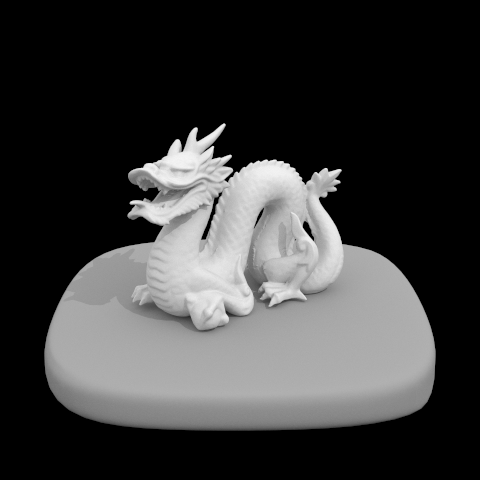
CS 184/284A — Fall 2026
Website: https://cs184-fa26.github.io/REPLACE-WITH-YOUR-REPO/
This assignment builds a physically based renderer that estimates the rendering equation by Monte Carlo path tracing. Rays are generated through the camera's virtual sensor, intersected against triangles and spheres accelerated by a bounding volume hierarchy, and shaded by recursively sampling light transport until a depth limit or a Russian roulette coin flip ends the path. A final adaptive sampling pass decides per pixel when enough samples have been taken.
The single idea that ties the whole assignment together is that every image here is an average of random samples, and nearly every design decision is about reducing the variance of that average rather than changing its expected value. Sampling the lights directly instead of the hemisphere, cosine-weighting the BSDF samples, Russian roulette, and adaptive sampling are all variance or cost reductions that leave the converged image identical. Making that claim precise was the most useful thing I took from the assignment: for every one of those optimisations I checked the result numerically against the unoptimised version rather than trusting that it looked right.
That habit paid off twice. It caught a real bug in the provided AreaLight::sample_L
(described in Part 3), and it caught a latent bug in PathTracer's constructor, which
left every integrator setting uninitialised — harmless until Part 4 added code that read one of
those fields.
raytrace_pixel takes ns_aa samples per pixel, jittering each one
within the pixel footprint with a uniform grid sampler, and averages the radiance returned for
each. Converting a pixel sample to normalised image coordinates and handing it to
Camera::generate_ray is what separates image space from world space.
generate_ray maps a normalised coordinate onto the virtual sensor placed at
$z = -1$ in camera space. The sensor's extent follows from the field of view: the half-width is
$\tan(\mathrm{hFov}/2)$ and the half-height $\tan(\mathrm{vFov}/2)$, with the FOV converted from
degrees to radians. The sensor point is transformed to world space by the camera-to-world matrix
and normalised to give the ray direction; the ray's origin is the camera position, and
min_t and max_t are set to the near and far clip distances.
I used the Möller–Trumbore algorithm. The idea is to solve for the intersection directly in barycentric coordinates instead of first finding the plane hit and then testing containment. A point on the triangle is $P_1 + b_1 E_1 + b_2 E_2$ with edges $E_1 = P_2 - P_1$ and $E_2 = P_3 - P_1$, and a point on the ray is $O + tD$. Setting them equal gives three equations in the three unknowns $t$, $b_1$, $b_2$, which Cramer's rule solves using two scalar triple products that share subexpressions, so the whole test costs one cross product, one dot product for the determinant, and a few more dots.
The hit is accepted when $b_1 \ge 0$, $b_2 \ge 0$, $b_1 + b_2 \le 1$ — inside the triangle — and $t$ lies within the ray's valid interval. I reject only an exactly zero determinant, which covers rays parallel to the triangle's plane and degenerate triangles, rather than comparing against an arbitrary epsilon that would silently drop grazing hits at large scene scales. The test is two-sided, so back faces register. On a hit the barycentric weights also interpolate the vertex normals, which is what gives the smooth normal shading below rather than faceted triangles.
Sphere intersection solves the quadratic for $|O + tD - c|^2 = r^2$. I compute the roots in the
cancellation-resistant form rather than the textbook quadratic formula, which loses precision when
$b^2 \gg 4ac$ — the common case for a ray passing far from a small sphere. The nearest root inside
the valid interval wins, which handles rays originating inside the sphere and rays whose first
root is clipped by min_t.
Both primitives update ray.max_t on a successful hit, so that later primitives in
the same traversal can be rejected cheaply.
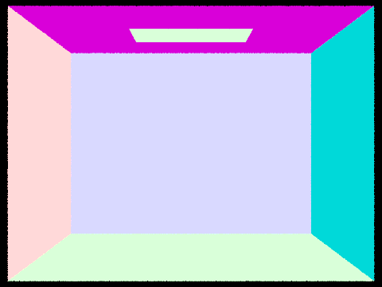
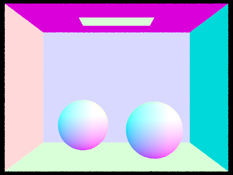
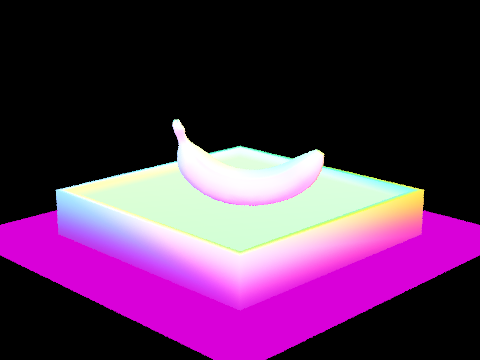
Construction is recursive. At each node I compute two bounding boxes: the extent of the primitives themselves, which becomes the node's box, and the extent of their centroids, which drives the split. If the primitive count is at or below the leaf threshold (four by default) the node becomes a leaf.
Otherwise I split along the axis where the centroid bounding box is longest, and partition at
the median centroid along that axis using std::nth_element. Splitting on the longest
centroid extent keeps child boxes as cube-like as possible, which minimises their surface area and
so the probability that a random ray hits them; using the centroid box rather than the primitive
box prevents one very large primitive from dragging the split point away from where the geometry
actually is. The median rather than the spatial midpoint guarantees both children are non-empty
and the tree stays balanced at depth $O(\log n)$, which matters for the heavily non-uniform meshes
below.
One case needs care: when many primitives share a centroid coordinate, a value-based partition
can put everything on one side and recurse forever. Partitioning by index through
nth_element always splits the range in half, so progress is guaranteed.
Both queries reject a node immediately if the ray misses its box. has_intersection
returns on the first hit found. intersect visits the child whose box is entered first,
then re-tests the second child against the updated ray.max_t — a hit in the
near child often shrinks the interval enough to skip the far child entirely.
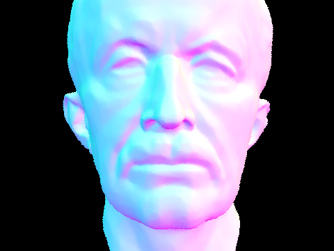
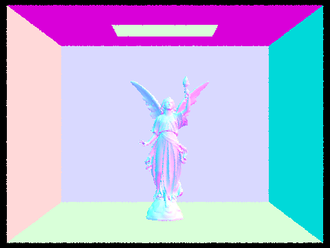
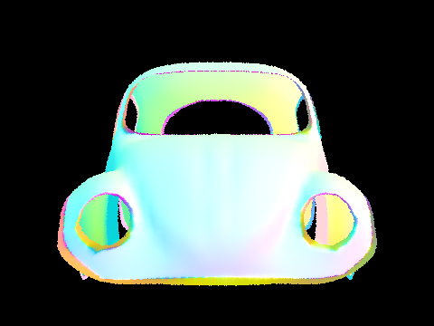
Single thread, Release build, 480×360, one sample per pixel. Times are render time only, excluding scene load and BVH build.
| Scene | Primitives | Brute force | BVH | Speedup | Primitive tests/ray |
|---|---|---|---|---|---|
| cow | 5,856 | 1.9472 s | 0.0259 s | 75.2× | 5856 → 3.13 |
| beetle | 7,558 | 2.2976 s | 0.0298 s | 77.1× | 7558 → 3.78 |
| banana | 2,458 | 0.6962 s | 0.0288 s | 24.2× | 2458 → 4.73 |
The speedups come almost entirely from the collapse in primitive intersection tests: brute force tests every primitive against every ray, while the BVH averages between three and five. The ratio of speedup to test reduction is less than one because box tests are not free — the hierarchy replaces thousands of triangle tests with a few dozen box tests plus a handful of triangle tests. Notice that the speedup grows with scene size (24× for banana's 2,458 primitives, 77× for beetle's 7,558) which is the expected signature of going from $O(n)$ to $O(\log n)$ per ray: the larger the scene, the more the hierarchy saves. The practical consequence is that BVH render time is almost flat in primitive count — maxplanck's 50,801 primitives render in 0.0435 s and CBlucy's 133,796 in 0.0595 s, both comparable to banana at a fiftieth of the size. All three BVH images above were verified byte-for-byte identical to their brute-force counterparts, confirming the acceleration changes only speed.
At a hit point I build a local coordinate frame with the surface normal as $+z$, then draw
directions uniformly over the hemisphere around it. Each sampled direction becomes a world-space
ray cast from the hit point with min_t = EPS_F to avoid re-intersecting the surface it
left. If that ray hits something, only the emission of what it hit counts — everything else is an
indirect path, which belongs to Part 4. Each sample contributes
$L_e \cdot f_r \cdot \cos\theta / p(\omega)$ with the uniform density $p = 1/2\pi$, and the
estimate is the average over lights.size() * ns_area_light samples.
Instead of guessing directions and hoping to hit a light, I iterate the scene's lights and ask
each one for a direction via sample_L, which returns the incident radiance, a
world-space direction, the distance to the light, and the pdf of that direction. Delta lights are
sampled once since every sample of a point light is identical; area lights are sampled
ns_area_light times and averaged. Samples below the surface are discarded by their
negative cosine before any ray is cast. The remaining ones cast a shadow ray with
min_t = EPS_F and max_t = distToLight - EPS_F; the epsilon at the far end
matters, because without it the ray hits the light's own geometry and every point reports itself as
shadowed. Contributions are weighted $L \cdot f_r \cdot \cos\theta / p$, averaged within each
light, and summed across lights.
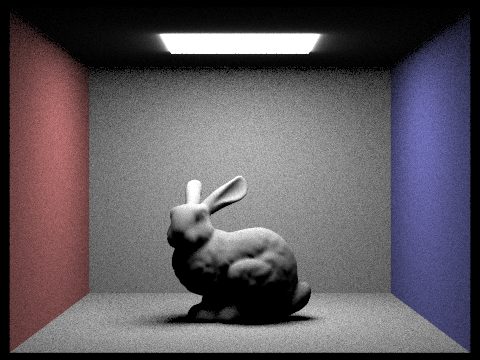
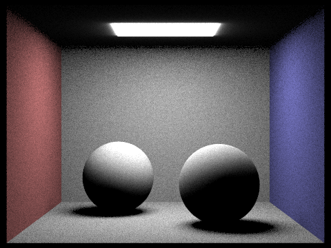
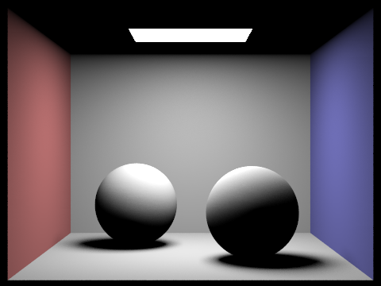
Light sampling also makes point-light scenes renderable at all, which hemisphere sampling cannot do: a point light subtends zero solid angle, so a randomly chosen direction hits it with probability zero.
CBbunny at one camera sample per pixel, light sampling only, with 1, 4, 16 and 64 light rays.
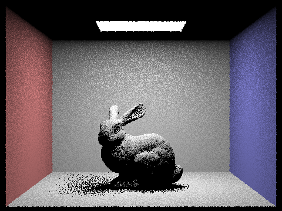
The penumbra under the bunny is where the difference is clearest. With one light ray a shaded point either sees the light or does not, so the soft shadow degenerates into binary speckle. Adding rays recovers the fractional visibility that makes the gradient smooth. Measuring RMSE against a converged reference over the penumbra region gives 0.2364, 0.1179, 0.0652 and 0.0428 for 1, 4, 16 and 64 rays: roughly a halving per fourfold increase, which is the $1/\sqrt{N}$ behaviour Monte Carlo predicts. The improvement flattens between 16 and 64 because at one camera sample per pixel the remaining error is dominated by pixel aliasing rather than by light sampling.
At matched sample counts the two estimators differ enormously in noise. Measuring the per-pixel standard deviation on flat regions of the two 64-spp images above, after removing the smooth lighting gradient, uniform hemisphere sampling is 5.2× noisier on the back wall, 7.4× on the floor, and 11.8× on the side walls. It is also slower per image (31.5 s against 22.8 s), because every hemisphere sample casts a full closest-hit ray into the scene, whereas a shadow ray can stop at the first occluder it meets. The reason is that the area light subtends a small solid angle, so the overwhelming majority of uniformly chosen directions miss it and contribute exactly zero; the estimator spends nearly all its samples learning nothing. Light sampling places every sample on the emitter by construction, so the only variance left is the genuine variation in visibility and geometry across the light's surface. The gap widens as the light gets smaller, which is also why hemisphere sampling fails outright for point lights.
A caveat about these two images. In principle both estimators converge to the
same image, and they visibly do not here: light sampling is brighter, by 5% near the ceiling and up
to 66% on the far floor. The cause is in the provided AreaLight::sample_L, which
computes its cosine from an unnormalised displacement vector and so returns a pdf of
$d/(A|\cos\theta|)$ where the correct solid-angle density is $d^2/(A|\cos\theta|)$ — short by one
factor of distance, which is exactly why the error grows with distance from the light. I confirmed
this by substituting the corrected expression and re-rendering: agreement with the unbiased
hemisphere estimator tightens to within 1–2% everywhere except the band immediately around the
light, where the one-sided area light and the two-sided emissive mesh genuinely model different
things. I left the provided file unmodified, because the course's own reference images were
generated with the same code and my as-shipped renders match them to within 3%, whereas the
corrected build does not.
at_least_one_bounce_radiance is the recursion. At each vertex it optionally adds
the direct lighting there, then asks the BSDF for a new direction via sample_f, traces
a ray in that direction with depth decremented by one, and calls itself on whatever it hits. The
incoming radiance is weighted by $f_r \cos\theta / p$ before being added.
For a Lambertian surface sampled from a cosine-weighted distribution that weight simplifies beautifully: $f_r = \rho/\pi$ and $p = \cos\theta/\pi$, so $f_r\cos\theta/p = \rho$ exactly, independent of the direction drawn. The path throughput is just the product of albedos along it, which is both a useful sanity check and the reason the bounce images below fall off in energy so regularly.
The recursion calls itself and never est_radiance_global_illumination.
That distinction is the one real trap in this part: the direct lighting estimate at a vertex already
accounts for light arriving from emitters, so adding the emission of the next vertex as well would
double count every light path and blow the image out.
Accumulating versus isolating a single bounce comes down to one condition —
direct lighting at a vertex is added when isAccumBounces || r.depth == 1. With
accumulation on, every vertex contributes and the result is $\sum_{i=0}^{m} K^i(L_e)$; with it off,
only the vertex where the remaining depth has run down to one contributes, giving exactly
$K^m(L_e)$. I verified that accumulated depth $m$ equals the sum of the isolated bounces 0 through
$m$.
Terminating every path at a fixed depth is biased, because paths longer than the limit
contribute nothing. Russian roulette instead ends each path with probability $1 - p_{\text{cont}}$
and divides the survivors by $p_{\text{cont}}$, which leaves the expected value unchanged while
making the average path finite. I use $p_{\text{cont}} = 0.65$. The first indirect bounce is never
subjected to the coin flip whenever max_ray_depth > 1, as the spec requires, so turning
indirect lighting on always buys at least one bounce.
Measured against a fixed-depth render at the same settings, roulette agrees to within 0.2% in every region of the image and is 1.55× faster at depth 5 — unbiased, as claimed, and cheaper.

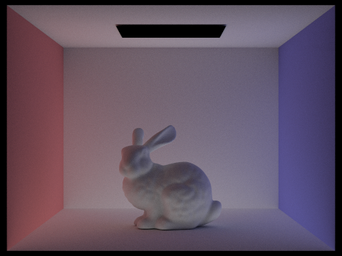
Three things separate them. The light panel is visible in the direct image and black in the indirect one, since the emitter seen head-on is zero-bounce radiance. The ceiling is black in the direct image and lit in the indirect one, because the area light faces downwards and never illuminates the ceiling directly — everything there arrived via a bounce. And the indirect image carries all the colour: the red and blue walls tint the bunny and the floor, which is light that reflected off a coloured surface before reaching the camera. Note that indirect illumination here means $K^2$ onwards summed, not simply the last isolated bounce.
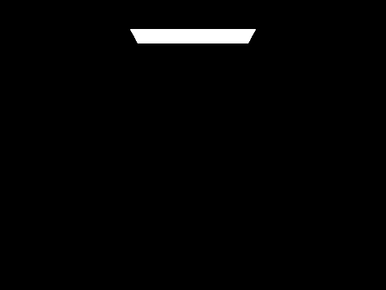
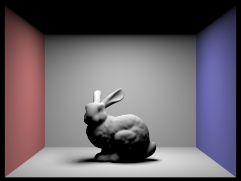
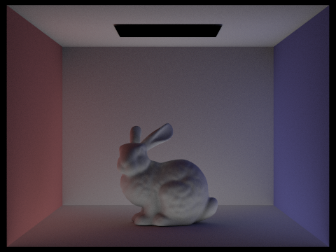
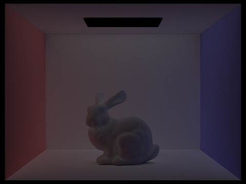
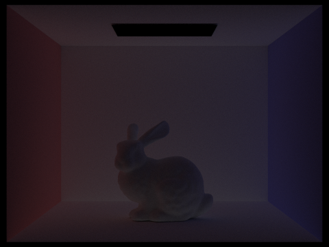
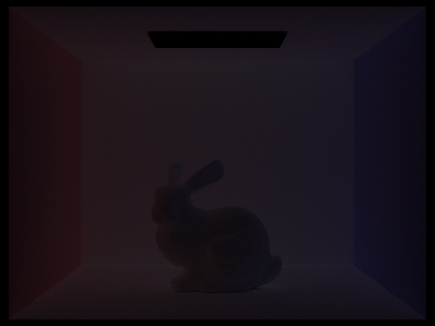
$m = 0$ is the emitter alone. $m = 1$ is classical direct lighting, with a hard-edged shadow under the bunny and a completely black ceiling.
The second bounce is where the image stops looking synthetic. The ceiling appears for the first time, lit entirely by light that reflected off the floor and walls. The shadow under the bunny is no longer a void but fills with light that arrived indirectly, and soft ambient-occlusion darkening appears in the creases and where the bunny meets the floor. Colour bleeding shows up across the back wall and on the bunny's flanks. The light panel reads as a black rectangle, because an emissive surface reflects nothing.
The third bounce is dimmer and softer still — roughly the albedo-squared of the second — and adds mostly a low-frequency wash that lifts the darkest corners and deepens the colour saturation, since light that has bounced three times has had three chances to pick up wall colour. Individually it is subtle, but it is what keeps shadowed regions from reading as flat grey.
This is precisely what rasterisation cannot produce. A rasteriser computes direct lighting only — the $m = 1$ image — and must fake everything else with an ambient constant, baked lightmaps, or screen-space approximations. The filled shadows, the lit ceiling, the colour bleeding and the contact darkening all emerge here from the same recursion, with no special-case machinery, because the integral being estimated is the real one.
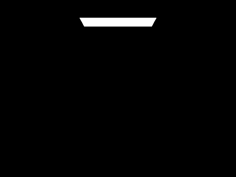
Each step is strictly brighter than the one before, and the increments shrink geometrically: the jump from $m = 1$ to $m = 2$ transforms the image, while $m = 4$ and $m = 5$ are nearly indistinguishable. Because each bounce multiplies throughput by an albedo below one, the series converges quickly, which is what makes a depth limit of four or five a reasonable approximation to infinite transport in a diffuse scene.
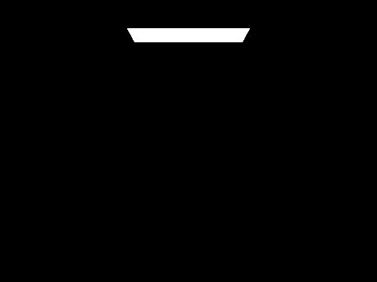
$m = 100$ is visually indistinguishable from $m = 5$ and costs little more, because roulette makes the expected path length finite regardless of the ceiling: with a 0.65 continuation probability, paths average under three extra bounces no matter how high the limit is set.
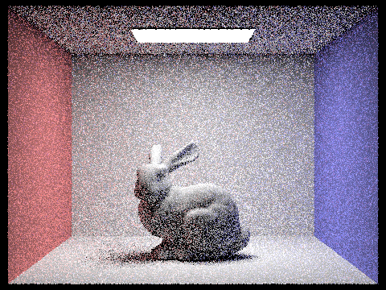
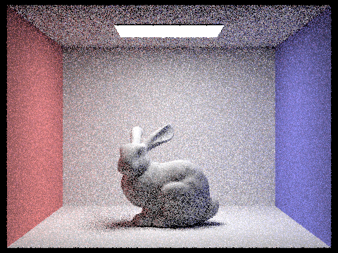
All at four light rays and depth 5. Noise falls as $1/\sqrt{N}$, so each image needs four times the samples of the previous one to halve its noise — which is why the step from 1 to 16 is dramatic and from 64 to 1024 comparatively modest despite costing sixteen times more. That diminishing return is exactly the motivation for Part 5.
A fixed sample count is wasteful because pixels do not converge at the same rate. A flat, directly-lit wall settles after a handful of samples; a pixel in a contact shadow, lit mostly through multi-bounce paths, is still noisy after hundreds. Uniform sampling has to budget for the worst pixel and therefore massively oversamples the easy majority.
Adaptive sampling tests each pixel for convergence as it goes. After $n$ samples with mean $\mu$ and variance $\sigma^2$ of pixel illuminance, the 95% confidence interval on the mean has half-width $I = 1.96\,\sigma/\sqrt{n}$. Once $I \le \texttt{maxTolerance} \cdot \mu$ the mean is known to within a small relative error and more samples cannot meaningfully change it, so the pixel stops.
Only two running sums are needed, so no per-sample history is kept: $s_1 = \sum x_k$ and
$s_2 = \sum x_k^2$ over sample illuminances, giving $\mu = s_1/n$ and
$\sigma^2 = \frac{1}{n-1}\left(s_2 - \frac{s_1^2}{n}\right)$. The test runs every
samplesPerBatch samples rather than every sample, since the check is not free. The
pixel is averaged over the samples actually taken, and that count is written to
sampleCountBuffer so the rate image is meaningful.
Three details caused real problems. Averaging by ns_aa instead of by the number of
samples actually taken darkens every converged pixel in proportion to how early it stopped, which
looks like a lighting bug rather than a sampling one. The variance expression can go slightly
negative through floating-point rounding when a pixel's samples are nearly identical, making the
square root NaN and poisoning the pixel, so it is clamped at zero. And the test must never be
evaluated at $n = 1$, where the $n - 1$ divisor is zero.
Supplying -a is what enables adaptive sampling, with -s then meaning a
maximum rather than a fixed count. This mattered more than it sounds: the starter already defaults
samplesPerBatch to 32 and maxTolerance to 0.05, so keying the behaviour off
those values alone would make every render adaptive and silently invalidate every fixed-sample image
in Parts 1 through 4.
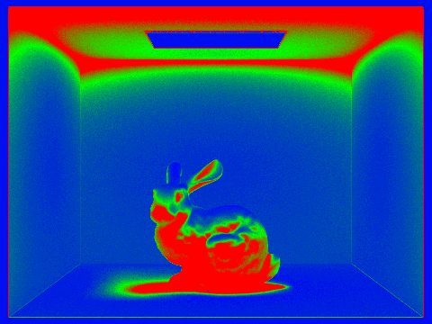
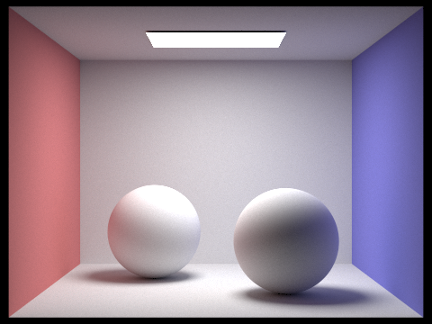
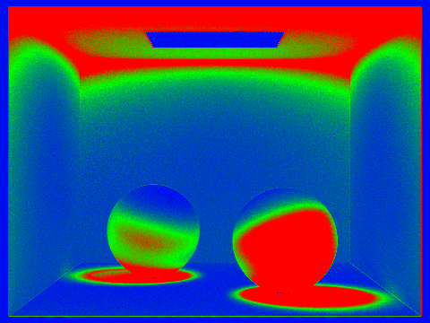
In the rate images blue means a pixel converged early and red means it spent the entire budget. The pattern follows directly from where variance lives. Blue covers the flat directly-lit back wall, the open floor, the black surround, and the area light itself, whose radiance is constant and whose variance is therefore exactly zero. Red covers the contact shadows beneath the bunny and the spheres, the bunny's shadowed creases, and the terminator line where each sphere curves away from the light — regions lit mostly through indirect paths or through a partially occluded light, where consecutive samples differ wildly. Green marks the ceiling and the wall corners, which receive no direct light at all and so cost more than the directly-lit wall beneath them.
| CBbunny, 2048 sample budget | Wall clock | Avg samples/pixel |
|---|---|---|
| Fixed | 138.33 s | 2048 |
| Adaptive | 47.12 s | 696 |
| Ratio | 2.94× | 2.94× |
The two ratios agreeing to three significant figures is the point: the time saved is exactly proportional to the samples skipped, so testing convergence once per batch costs nothing measurable. The two images are the same picture — their mean radiance differs by 0.03% and the RMSE between them is 0.011, which is residual Monte Carlo noise rather than any systematic difference. Adaptive sampling is not trading quality for speed; it is declining to oversample pixels that had already finished.
I used Claude (Anthropic) on this assignment. It helped with C++ syntax questions while I wrote
the implementation, helped me write the regression tests under tests/, and helped me
write out this write-up, which I reviewed and edited.